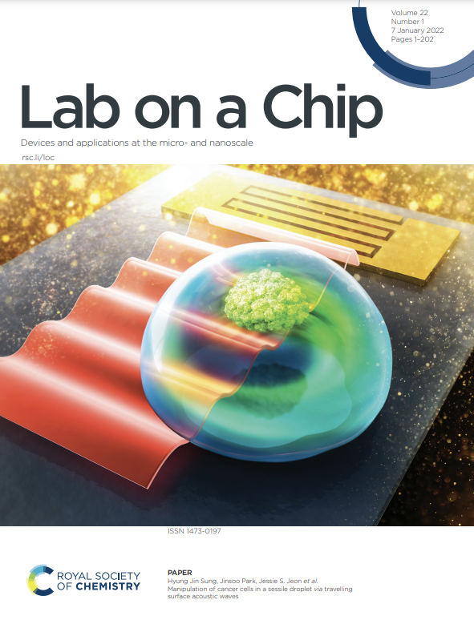
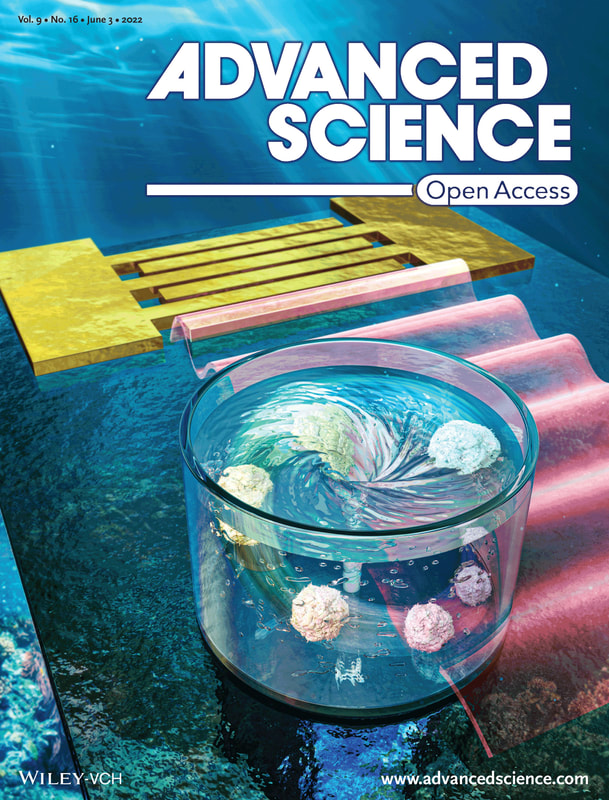
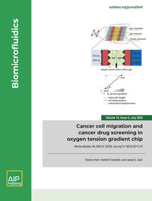
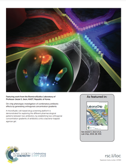
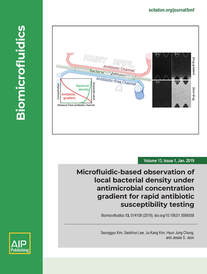

JOURNAL PUBLICATIONS
- Leslie Y Yeo, Lizebona A Ambattu, J.S.Jeon, and D.Kwak, The 2026 guided acoustic waves roadmap, 18. Sonomechanobiology, J. Phys. D: Appl. Phys, 2026, [link]
- J. Kim, Zhuo Feng Lee, Gi-Dong Sim, Sejoong Kim, J.S.Jeon+, Implementation of Drug-Induced Rhabdomyolysis and Acute Kidney Injury in Microphysiological System, Advanced Functional Materials, 2025, [link]
- S. Kim, Tianxin Cao, Zhengpeng Wan, Jaesang Kim, Zhuxuan Li, Legairre A Radden Ii, Rakesh Santhanam, Eunkyung Clare Ko, Tatsuya Osaki, Sarah Spitz, Hyunmin Moon, Maria Proestaki, Seokbeom Roh, Gyudo Lee, J.S. Jeon, Curtis R Warren, R.D.Kamm, A Microphysiological Interface of Skeletal Myobundles and Inflamed Adipose Tissue for Recapitulating Muscle Dysfunction in an Obese Microenvironment, Advanced Healthcare Materials, 2025, [link]
- S. Kwon, S. Jo, J. Park, J. Park, Y. Kim, J. Baek, M. Kim, B. Choi, N. Hong, H. Jung, H. Ryu, J.S.Jeon, & Y. Kim+, Development of the Gut Microbial Immune and Epithelial Cellular System (GutMICS) to Investigate the Immunological Role of Gut Anaerobes. Biotechnology and Bioengineering. 2025, [ link ]
- U. Nam, H. Kim, J Kim, K. Nam, K. Lee, H. Hur, & J.S.Jeon+, J. Bae+, Novel Drug‐Testing Platform for Vascular Injury‐induced Intimal Hyperplasia Using a Microphysiological System. Advanced Healthcare Materials, 2025, [link]
- I. Kim*, J. Kim*, & J.S.Jeon+, Development of a 3D Vascularized Skeletal Muscle Model Using Bi-Layered Seeding Methods. BioChip Journal, 2025, 1-11, [link]
Selected as Front Cover Article! - J. Kwon, H. Nam, J. Park, I. Kim, & J.S.Jeon+, Development of a Vessel-on-a-Chip as a Viral Infection Model and Antiviral Drug Screening Platform with Viral Mimics. ACS Biomaterials Science & Engineering, 2025, [link]
- J.Kim, I.Kim, Z.F.Lee, J.Han, J.Ahn, Y.Jo, P.Kim, H.Yoo, G.Sim, J.S.Jeon+, Detrimental effects of advanced glycation end-products (AGEs) on a 3D skeletal muscle model in microphysiological system, Biosensors and Bioelectronics, 2025, 278, 117316, [link]
- J.Kim*, I.Kim*, Z.F.Lee, G.Sim, J.S.Jeon+, Strategic Approaches in Generation of Robust Microphysiological 3D Musculoskeletal Tissue System, Advanced Functional Materials, 2024, 34, 2410872 [link].
- J.-E.Park*, H.Nam*, J.S.Hwang, S.Kim, S.J.Kim, S.Kim, J.S.Jeon+, M.Yang+, Label-Free Exosome Analysis by Surface-Enhanced Raman Scattering Spectroscopy with Laser-Ablated Silver Nanoparticle Substrate, Advanced Healthcare Materials, 2024, 13, 2402038 [link]
- I.Kim*, J.Kwon*, J.Rhyou*, J.S.Jeon+, Microfluidic chips as drug screening platforms, JMST Advances, 2024, 1-6. [link]
- J.Y.S.Yoon, J.Park, H.Nam, S.Kim, J.S.Jeon+, Multi-layered Microfluidic Drug Screening Platform Enabling Simultaneous Generation of Linear and Logarithmic Concentration Gradients, Biochip Journal, 2024, 18, 427-438, [link]
- U.Nam*, S.Lee*, A.Ahmad, H.-G.Yi, J.S.Jeon+, Microphysiological Systems as Organ-Specific In Vitro Vascular Models for Disease Modeling, Biochip Journal, 2024, 18, 345-356, [link]
- U.Nam, J.Kim, H.-G.Yi, J.S.Jeon+, Investigation of the Dysfunction Caused by High Glucose, Advanced Glycation End Products, and Interleukin-1 Beta and the Effects of Therapeutic Agents on the Microphysiological Artery Model, Advanced Healthcare Materials, 2024, 13, 2302682. [link]
- D.Kwak, Y.Im, H.Nam, U.Nam, S.Kim, W.Kim, H.J.Kim, J.Park, J.S.Jeon+, Analyzing the effects of helical flow in blood vessels using acoustofluidic-based dynamic flow generator, Acta Biomaterialia, 2024, [link]
- M. Lee*, S.Kim*, S.Y.Lee, J.G.Son, J.Park, S.Park, J.Yeun, T.G.Lee+, S.G.Im+, J.S.Jeon+, Hydrophobic surface induced pro-metastatic cancer cells for in vitro extravasation models , Bioactive Materials, 2024. [link]
- S.Kim*, J.Park*, JN.Ho, D.Kim, S.Lee+, J.S.Jeon+, 3D vascularized microphysiological system for investigation of tumor-endothelial crosstalk in anti-cancer drug resistance, Biofabrication, 2023. [link]
- SJ.Kim, MG.Kim, J.Kim, J.S.Jeon, J.Park, HG.Yi+, Bioprinting methods for fabricating in vitro tubular blood vessel models, Cyborg and Bionic Systems, 2023. [link]
- U.Nam, S.Lee, J.S.Jeon+, Generation of a 3D Outer Blood–Retinal Barrier with Advanced Choriocapillaris and Its Application in Diabetic Retinopathy in a Microphysiological System, ACS Biomaterials Science & Engineering, 2023. [link]
- W.Kim, B.Cha, J.S.Jeon, J.Park+, Acoustofluidic control of chemical concentration within picoliter droplets in a disposable microfluidic chip, Sensors and Actuators B: Chemical, 2023. [link]
- J.N.Ho, J.S.Jeon, D.H.Kim, H.Ryu, S.Lee+, CUDC‑907 suppresses epithelial‑mesenchymal transition, migration and invasion in a 3D spheroid model of bladder cancer, Oncology Reports, 2023. [link]
- H.Nam, J.E.Park, W.Waheed, A.Alazzam, H.J.Sung+, J.S.Jeon+, Acoustofluidic lysis of cancer cells and Raman spectrum profiling, Lab on a Chip, 2023. [link]
- S.Kim*, Z.Wan*, J.S.Jeon+, R.D.Kamm+, Microfluidic Vascular Models of Tumor Cell Extravasation, Frontiers in Oncology, 2022, [link]
- J.Park, S.Kim, J.Hong, J.S.Jeon+, Enabling perfusion through multicellular tumor spheroids promoting lumenization in a vascularized cancer model, Lab on a Chip, 2022, 22, 4335-4348. [link]
- S.Lee, S.Kim, J.S.Jeon+, Microfluidic outer blood–retinal barrier model for inducing wet age-related macular degeneration by hypoxic stress, Lab on a Chip, 2022, 22, 4359-4368. [link]
- J.Ahn, J.Kim, J.S.Jeon+, Y.Jang+, A microfluidic stretch system upregulates resistance exercise-related pathway, BioChip Journal, 2022. [link]
- S.Kim, H.Nam, B.Cha, J.Park+, H.J.Sung+, J.S.Jeon+, Acoustofluidic Stimulation of Functional Immune Cells in a Microreactor, Advanced Science, 2022, 2105809. [link]
- H.Nam, H.J.Sung+, J.Park+, J.S.Jeon+, Manipulation of cancer cells in a sessile droplet via travelling surface acoustic waves, Lab on a Chip, 2022, 22(1), 47-56. [link]
- DH.Ryu*, H.Nam*, J.S.Jeon+, YK.Park+, Reagent- and actuator-free analysis of individual erythrocytes using three-dimensional quantitative phase imaging and capillary microfluidics, Sensors and Actuators B: Chemical, 2021, 348, 130689. [link]
- J.Kim, W.Kim, J.Ahn, Y.J.Jang+, H.S.Park+, J.S.Jeon+, Investigation on the Effect of Cyclic Stretch and Hypoxia on Recovery of Damaged Skeletal Muscle Cells Using Microfluidic System, Advanced Materials Technologies, 2021, 6(11), 2170063. [link]
- Y.Im, S.Kim, J.Park+, H.J.Sung+, J.S.Jeon+, Antibiotic susceptibility test under a linear concentration gradient using travelling surface acoustic waves, Lab on a Chip, 2021, 21(18), 3449-3457. [link]
- M.Afzal, J.Park, J.S.Jeon, M.Akmal, T.S.Yoon, H.J.Sung+, Acoustofluidic Separation of Proteins Using Aptamer-Functionalized Microparticles, Analytical Chemistry, 2021, 93(23), 8107-8378. [link]
- S.H.Hwang, S.Lee, J.Y.Park, J.S.Jeon, Y.J.Cho, S.Kim+, Potential of Drug Efficacy Evaluation in Lung and Kidney Cancer Models Using Organ-on-a-Chip Technology, Micromachines, 2021, 12(2), 215. [link]
- S.Kim, J.Park, J.Kim, J.S.Jeon+, Microfluidic Tumor Vasculature Model to Recapitulate an Endothelial Immune Barrier Expressing FasL, ACS Biomaterials Science & Engineering, 2021, 7(3), 1230-1241. [link]
- J.S.Hwang, J.E.Park, G.W.Kim, H.Nam, S.Yu, J.S.Jeon, S.Kim, H.Lee, M.Yang+, Recycling silver nanoparticle debris from laser ablation of silver nanowire in liquid media toward minimum material waste, Scientific Reports, 2021, 11, 2262. [link]
- C.Lee*, S.Kim*, H.Hugonnet, M.Lee, W.Park, J.S.Jeon+, YK.Park+, Label-free three-dimensional observations and quantitative characterization of on-chip vasculogenesis using optical diffraction tomography, Lab on a Chip, 2021, 21(3), 494-501. [link]
- N.Yoon, S.Kim, H.K.Sung, T.Q.Dang, J.S.Jeon, G.Sweeney+, Use of 2-dimensional cell monolayers and 3-dimensional microvascular networks on microfluidic devices shows that iron increases transendothelial adiponectin flux via inducing ROS production, Biochimica et Biophysica Acta - Gen. Sub., 2021, 1865(2), 129796. [link]
- J.Han*, U.Ko*, H.Kim, S.Kim, J.S.Jeon, J.H.Shin+, Electrospun Microvasculature for Rapid Vascular Network Restoration, Tissue Eng. Regen. Med., 2021, 18(1), 89-97. [link]
- J.E.Park*, N.Oh*, H.Nam, J.Park, S.Kim, J.S.Jeon+, M.Yang+, Efficient Capture and Raman Analysis of Circulating Tumor Cells by Nano-Undulated AgNPs-rGO Composite SERS Substrates, Sensors, 2020, 20, 5089. [link]
- U.Nam, S.Kim, J.Park, J.S.Jeon+, Lipopolysaccharide-induced vascular inflammation model on microfluidic chip, Micromachines, 2020, 11, 747. [link]
- H.Nam, K.Funamoto+, J.S.Jeon+, Cancer cell migration and cancer drug screening in oxygen tension gradient chip, Biomicrofluidics, 2020, 14, 044107. [link]
- S.Park, S.Lim, P.Siriviriyakul, J.S.Jeon+, Three-dimensional pore network characterization of reconstructed extracellular matrix, Physical Review E, 2020, 101, 052414. [link]
- J.Y.Teo, E.Ko, J.Leong, J.Hong, J.S.Jeon, Y.Y.Yang, H.Kong+, Surface Tethering of Stromal Cell-Derived Factor-1a Carriers to Stem Cells Enhances Cell Homing to Ischemic Muscle, Nanomedicine, 2020, 28, 102215. [link]
- N.Yoon, K.Dadson, T.Dang, T.Chu, N.Noskovicova, B.Hinz, A.Raignault, E.Thorin, S.Kim, J.S.Jeon, J.Jonkman, T.McKee, J.Grant, J.D.Peterson, S.P.Kelly, G.Sweeney+, Tracking adiponectin biodistribution via fluorescence molecular tomography indicates increased vascular permeability after streptozotocin-induced diabetes, Am. J. Phyiol. Endocrinol. Metab., 2019, 317(5). E760-E772. [link]
- Y.Shin, S.Lim, J.Kim, J.S.Jeon, H.Yoo+, B.Gweon+, Emulating endothelial dysfunction by implementing an early atherosclerotic microenvironment within a microfluidic chip, Lab on a Chip, 2019, 19(21), 2664-3677. [link]
- S.Kim, F.Masum, J.S.Jeon+, Recent Developments of Chip-based Phenotypic Antibiotic Susceptibility Testing, Biochip J, 2019, 13(1), 43-52. [link]
- S.Kim, F.Masum, J.Kim, H.Jeong, J.S.Jeon+, On-chip Phenotypic Investigation of Combinatory Antibiotic Effects by Generating Orthogonal Concentration Gradients, Lab on a Chip, 2019, 19(6), 959-973. [link]
- S.Kim, S.Lee, J.Kim, H.Jeong, J.S.Jeon+, Microfluidic-based Observation of Local Bacterial Density under Antimicrobial Concentration Gradient for Rapid Antibiotic Susceptibility Testing, Biomicrofluidics, 2019, 13(1), 014108. [link]
- J.Ryu, J.Kim, J.Oh, S.Lim, J.Y.Sim, J.S.Jeon, K.No, S.Park+, S.Hong+, Intrinsically Stretchable Multi-functional Fiber with Energy Harvesting and Strain Sensing Capability, Nano Energy, 2019, 55, 348-353. [link]
- W.Kim*, J.Kim*, H-S. Park+, J.S.Jeon+, Development of Microfluidic Stretch System for Studying Recovery of Damaged Skeletal Muscle Cells, Micromachines, 2018, 9(12), 671. [link]
- S.Lim, H.Nam, J.S.Jeon+, Chemotaxis model for human breast cancer cells based on signal-to-noise ratio, Biophysical Journal, 2018, 115(10), 2034-2043. [link]
- K.Kim*, H.Kim*, S.Kim, J.S.Jeon+, MineLoC: A rapid production of lab-on-a-chip biosensors usign 3D printer and the sandbox game, Minecraft, Sensors, 2018. 18(6), 1896. [link]
- K.Kim, S.Kim, J.S.Jeon+, Visual estimation of bacterial growth level in microfluidic culture systems, Sensors, 2018, 18(2), 447. [link]
- K.Kim, J.Hyun, J.S.Jeon+, Light Emitting Marker for Robust Vision-Based On-The-Spot Bacterial Growth Detection, Sensors, 2017, 17(6), 1459. [link]
- S.Kim, W.Kim*, S.Lim*, J.S.Jeon+, Vasculature-on-a-chip for in vitro disease models, Bioengineering, 2017, 4(1). 8. [link]
- K.Kim, D.Choi, H.Lim, H.Kim, J.S.Jeon+, Vision marker-based in situ examination of bacterial growth in liquid culture media, Sensors, 2016, 16(12), 2179. [link]
- S.Han, Y.Shin, H.E.Jeong, J.S.Jeon, R.D.Kamm, D.Huh, L.L.Sohn, S.Chung+, Constructive remodeling of a synthetic endothelial extracellular matrix, Scientific Reports, 2015, 5, 18290. [link]
- J.S.Jeon*, S. Bersini*, G. Dubini, J.L.Charest, M.Moretti+, R.D.Kamm+, Human 3D vascularized organotypic microfluidic assays to study breast cancer cell extravasation, PNAS, 2015, 112(1), 214-219. [link]
- C. Kim, J. Kasuya, J.S.Jeon, S. Chung, R.D.Kamm+, A quantitative microfluidic angiogenesis screen for studying anti-angiogenic therapeutic assay, Labchip, 2015, 15(1), 301-310. [link]
- J.S.Jeon*, S.Bersini*, G.Dubini, S.Chung, J.L.Charest, M.Moretti+, R.D.Kamm+, Generation of 3D functional microvascular networks with human mesenchymal stem cells in microfluidic systems, Integ. Biol., 2014, 6(5), 555-563. [link]
- S.Bersini*, J.S.Jeon*, M.Moretti+, R.D.Kamm+, In vitro models of the metastatic cascade: from local invasion to extravasation, Drug Discovery Today, 2014, 19(6), 735-742. [link]
- S.Bersini*, J.S.Jeon*, G.Dubini, J.L.Charest, M.Moretti+, R.D.Kamm+, A microfluidic 3D in vitro model for specificity of breast cancer metastasis to bone, Biomaterials, 2014, 35(8), 3861-3865 [link]
- M.B.Chen, J.Whisler, J.S.Jeon, R.D.Kamm+, Mechanisms of tumor cell extravasation in an in vitro microvascular network platform, Integ. Biol., 2013, 10(5), 1262-1271. [link]
- J.S.Jeon, I.Zervantonakis, S.Chung, J.L.Charest, R.D.Kamm+. In vitro model of tumor cell extravasation, PLOS ONE, 2013, 8(2), e56910. [link]
- S.Han, J.-J.Yan, Y.Shin, J.S.Jeon, R.D.Kamm, Y.-J.Kim+, S.Chung+, A versatile assay for monitoring in vivo-like transendothelial migration of neutrophils, Labchip, 2012, 12(20), 3861-3865. [link]
- Y.Shin*, S.Han*, J.S.Jeon, K.Yamamoto, I.K.Zervantonakis, R.Sudo, R.D.Kamm+, S.Chung+, Microfluidic assay for simultaneous culture of multiple cell types on surfaces of within hydrogels, Nature Protocols, 2012, 7(7), 1247-1259. [link]
- Y.J.Shin*, J.S.Jeon*, G.S.Jung, S.Han, S.Shin, S.H.Lee, R.Sudo, R.D.Kamm, S. Chung+. In vitro 3D collective sprouting angiogenesis under orchestrated ANG-1 and VEGF gradients, Labchip, 2011, 11(13), 217502181. [link]
- J.S.Jeon, S.Chung, R.D.Kamm, J.L.Charest+. Hot embossing for fabrication of a microfluidic 3D cell culture platform, Biomed Microdevices, 2011, 13(2), 325-333. [link]
* denotes equal contribution to the work
+ denotes (co-)corresponding author(s)






